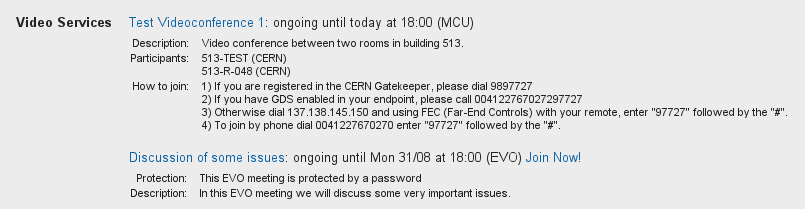
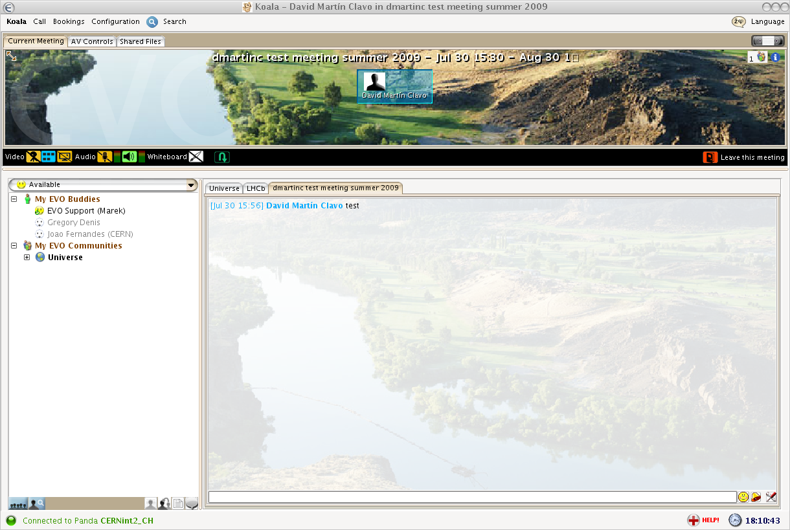

4.1. Introduction¶
Indico now allows event managers to book and program videoconferences associated with their events. For example, the EVO, CERN MCU and Vidyo systems can be used. Indico users can see information about these videoconferences in the public pages of the events.
The goal of this guide is to show how to see information about videoconferences which have been programmed for Indico events of type meeting, lecture and conference, and how to join them.
For more information on the EVO, CERN’s MCU and Vidyo services, please visit the Videoconferencing technologies at CERN page.
4.2. Videoconferences in events of type “meeting” and “lecture”¶
If a videoconference has been booked for a meeting or a lecture, the page of that event will look as shown in the next figure. You will notice there is a Video Services section (marked in orange color).

This Video Services section has a list of videoconferences that have been booked for this event. If the last line reads something similar to: “There are 2 more scheduled bookings. **Show**“, then you can click on Show to display all of them:

If you want to hide them to save visual space, click on Hide additional bookings. In meetings and lectures, we only show two bookings in order to save space for the timetable below.
In the previous list, each videoconference is represented by a line of text. The contents of this line are:
- The title of the videoconference. If you click on it, you will see detailed information (see the figure below).
- The starting and ending times of the booking, expressed in your timezone (the one that is selected in the top right bar). If the videoconference is currently ongoing, the word ongoing will appear.
- The type of videoconference (EVO, MCU, Vidyo).
- If you can join the videoconference from your computer, a link to do so will be available. For example, you can see the Join Now! link next to the second booking in the previous screenshot.
The videoconferences are ordered by their start time. Thus, ongoing conferences will be shown first, and then the scheduled ones:

This detailed information will usually include:
- Protection: The videoconference is protected by a password / PIN.
- Description: The description given by the event managers.
- Instructions on how to join, in case you cannot join from your PC because you need another physical device to do so. For example, for a CERN MCU videoconference, you need to be in a CERN room equipped with an adequate videoconferencing camera and screen.
4.3. Videoconferences in events of type “conference”¶
In Indico, a conference has several display pages. The display page for the Overview of a conference usually looks as shown in the next figure:

You will notice that on the left there is a menu with several options. Clicking on those options will bring you to various sub-sections of the conference page.
Click on Video Services (highlighted in orange in the next figure) to access the Video Services section.

The Video Services section has a list of videoconferences that have been booked for this event. First the videoconferences that are currently ongoing will appear, followed by the upcoming videoconferences. The upcoming videoconferences will be grouped by day, which is useful if the event takes several days.
Each videoconference is represented by a line of text, identical to those already described in previous section. Click on the title of the videoconference to show detailed information, and on the Join Now! link to join it, if there is one.
In the following screenshot we can see the detailed information of a booking.

4.4. The EVO system¶
EVO is a videoconferencing system that can run on your PC as long as you have a webcam connected to it.
An ongoing EVO videoconference associated with an Indico event will appear like this:

If the EVO booking is not yet ongoing, you will have to wait until its start time for the Join Now! link to appear.
To launch an ongoing EVO videoconference associated with an Indico event, just click on the Join Now! link:

This will connect you to the EVO webpage and download Koala, the EVO client. Koala is the program that will let you chat and videoconference with other EVO users, or remotely view and participate in events that are being recorded and streamed in EVO.
EVO may take some time to download and load, so be patient...

You will be asked for your account name and password, unless you have already checked the option Save Password in a previous session.
After EVO’s Koala has started, wait a few seconds and Koala should automatically go into the EVO meeting that you want to join. If it’s a protected EVO meeting, you will have to input your password.

For more information about EVO or getting a free EVO account, go to http://evo.caltech.edu/evoGate/ .
4.5. The MCU system¶
An MCU is a machine that allows multiple videoconferencing-equipped rooms to have a common videoconference.
An MCU videoconference associated with an Indico event will look like this:

Unlike EVO, MCU videoconferences cannot be joined from your PC; they are room-to-room videoconferences.
Usually, the event managers will have defined a list of participants (rooms) that will participate in the videoconference. When the videoconference starts, the MCU will contact the videoconferencing systems of those rooms automatically.
However, if you want to join the videoconference from your room, by phone, etc., you have to follow the instructions in the detailed information. Here are the different methods to join a MCU videoconference:
- Dial a number in the CERN Gatekeeper: you have to dial a prefix (in the example, 98), and then the Conference ID (97727 in the example).
- By GDS: call a phone number composed by a prefix (in the example, 0041227670272), plus the Conference ID (97727).
- Using the Far-End Controls of your H.323 camera remote, dial the IP address of the MCU (in the example, 137.138.145.150) and enter the Conference ID (97727) followed by the # sign.
- Join directly by phone by dialling a prefix (00412276770270 in the example), and enter the Conference ID (97727) followed by the # sign.
For further instructions on how to join a MCU videoconference by yourself, you can contact videoconference-support@cern.ch.
4.6. The Vidyo system¶
Vidyo is a videoconferencing system that can run on your PC or used with an H.323 device. To use it in your PC, you need the Vidyo client installed and a webcam and audio device connected (please go to recommendations page for videoconferencing PC hardware).
An ongoing Vidyo videoconference associated to an Indico event will appear like this:

If the Vidyo meeting is not yet ongoing, the Join Now! button will not be shown.
To launch an ongoing Vydio videoconference associated with an Indico event, just click on the Join Now! link:
This will connect you to the Vidyo Portal where you will be asked for your account name and password. For information about registration, please go to http://cern.ch/vidyo-service/. If you are not yet registered in the system, you can also choose a Guest name:

If it’s a protected Vidyo meeting, you will have to input your PIN.

After logging in, the VidyoDesktop client will pop-up and you will receive/send video and audio from/to the meeting.